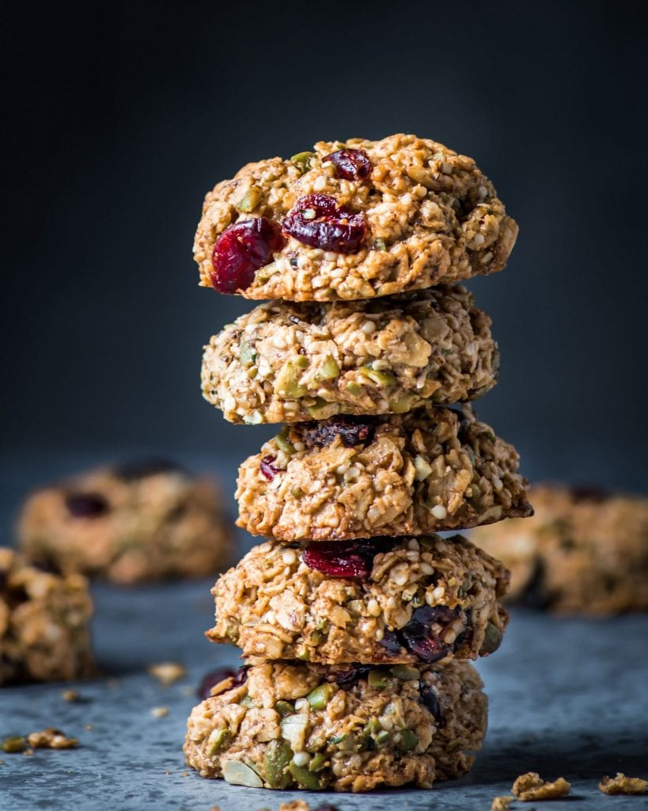
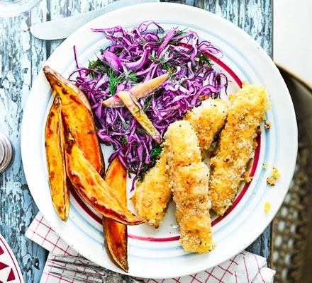
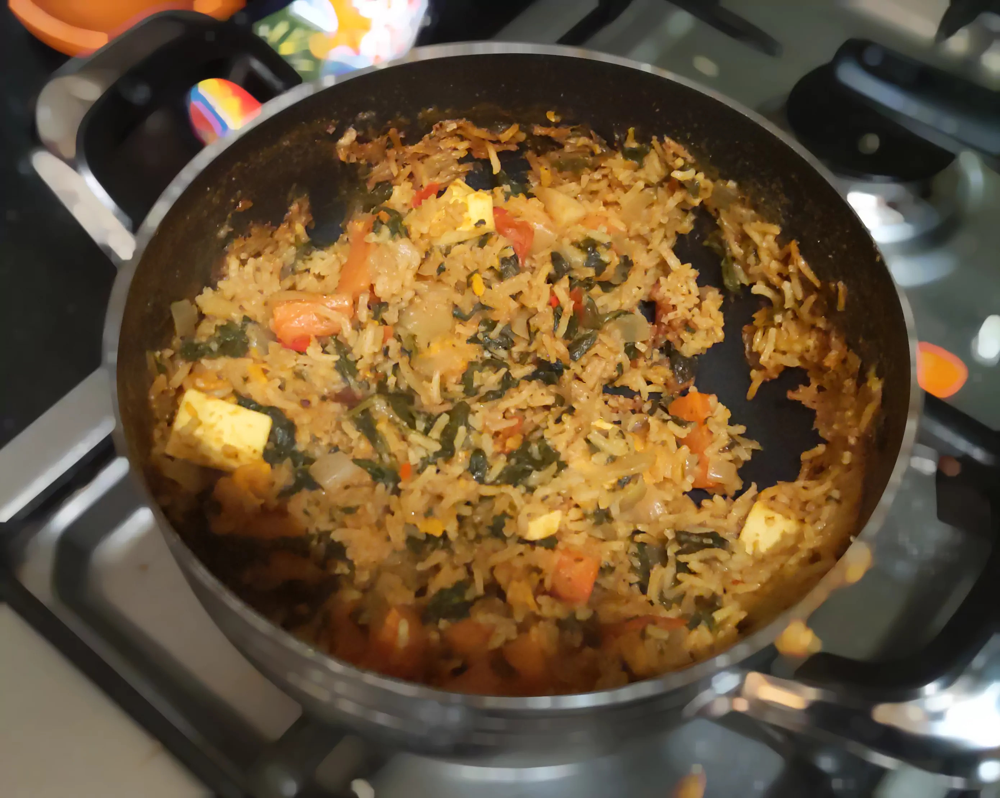
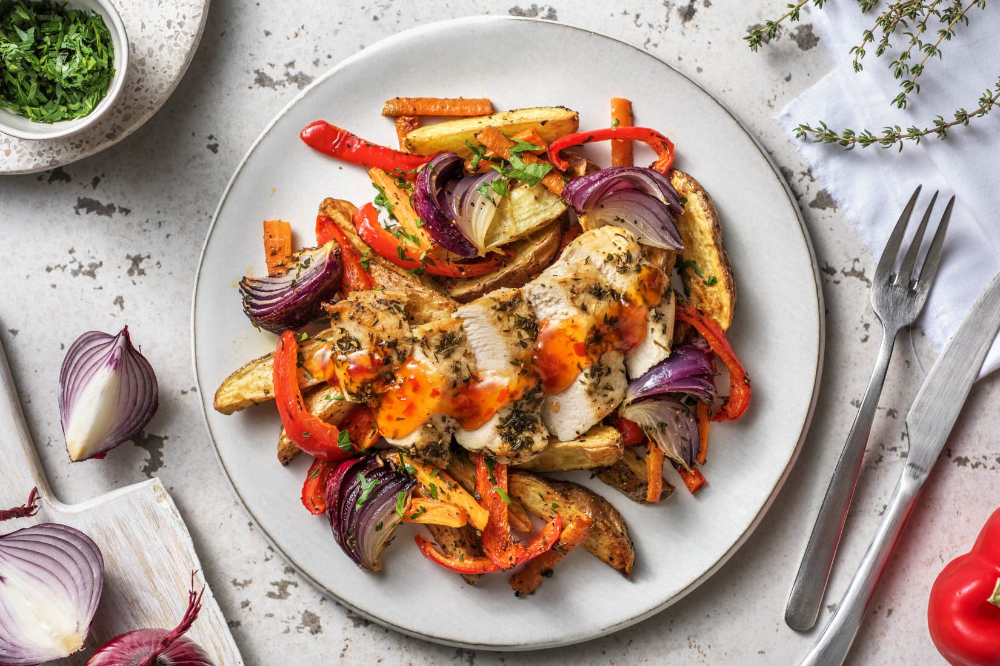
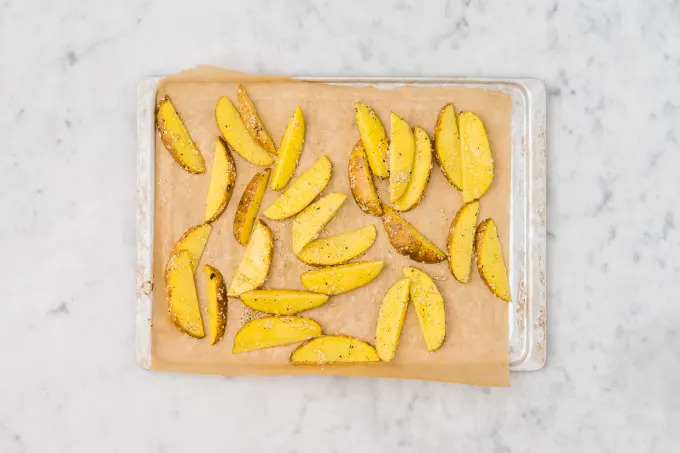
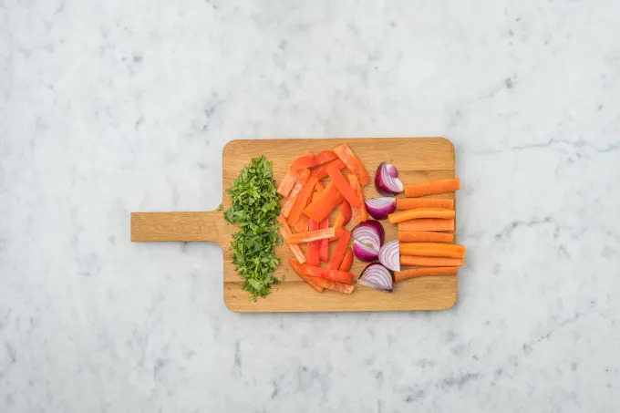
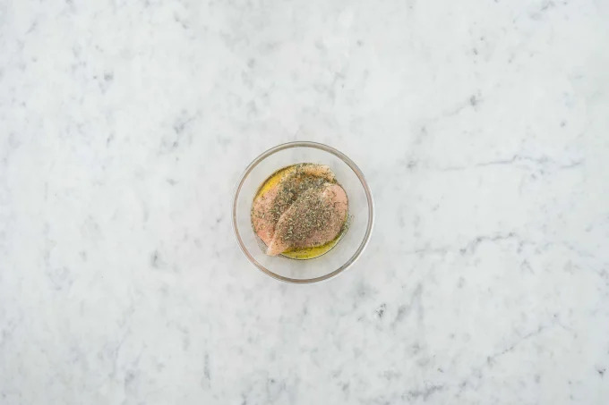
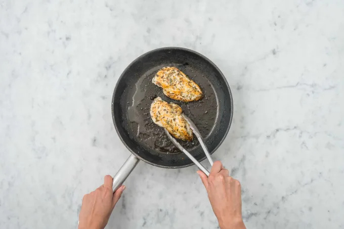
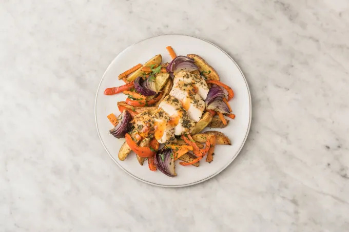

Recipes
A collection of recipes (for food) that I have used in the past.
Vegan Breakfast Cookies
These Vegan Breakfast Cookies are healthy enough to eat for breakfast or a post-workout snack! Made with oats, seeds, and almond butter, these cookies are deceptively delicious and are vegan, gluten-free, oil-free, refined sugar-free, and soy-free!

- Prep time: 30 minutes
- Cook time: 30 minutes
- Chill time: 5 minutes
- Total time: 65 minutes
Ingredients
Serves 24
| Amount | Ingredient | Comment |
|---|---|---|
| 2 tbs | Ground Flaxseed Meal | |
| 2 cups | Rolled Oats | Certified gluten-free, as needed |
| 0.5 cups | Shredded Coconut | |
| 0.5 tsp | Baking Powder | |
| 0.5 tsp | Baking Soda | |
| 0.5 tsp | Fine Sea Salt | |
| 0.75 cups | Smooth, Creamy Variety of Almond Butter | Can substitute Cashew Butter |
| 0.5 cups | Pure Maple Syrup | |
| 1.5 tsp | Pure Vanilla Extract | |
| 1.5 cups | Dried Fruit (Cranberries, Currants, Chopped Apricots) | |
| 0.5 cups | Pepitas and/or Sunflower Seeds, chopped | |
| 0.33 cups | Hemp Seeds | aka Hemp Hearts |
Steps
- Prepare the flax eggs. Combine the ground flaxseed meal with 5 tablespoons water. Stir and let sit for 15 minutes to gel together. (15 minutes)
- Preheat the oven to 350ºF/175ºC. Line two large baking sheets with parchment paper.
- In a large bowl, mix together the dry ingredients: oats, coconut, baking powder, baking soda, and salt.
- In a medium bowl, mix together the wet ingredients: almond butter, maple syrup, vanilla, and prepared flax eggs. Whisk until smooth and thick.
- Pour the wet mixture into the dry ingredients, using a silicone spatula to mix everything until the mixture resembles a cookie dough. Fold in your desired mix-ins (dried fruit, pumpkin/sunflower seeds, and hemp seeds) using the spatula.
- If the dough is too sticky to handle, refrigerate it for 10-15 minutes to firm up slightly. (10 - 15 minutes)
- Use an ice cream scoop or large spoon to scoop about 3 tablespoons of dough onto the prepared baking sheet, spacing them about 1/2 inch apart. Alternatively, measure out 3 tablespoons and shape the dough into a round using your hands. Lightly flatten the top of each cookie with your hands or a fork.
- Bake the cookies for about 18-20 minutes. (18 - 20 minutes)
- Cool for 5 minutes. Use a spatula to carefully transfer them to a cooling rack. Store leftover cookies in an airtight container on the counter for 5 to 7 days. (5 minutes)
Sources
Crispy cod fingers with wedges & dill slaw
A fantastic budget family meal with a crunchy slaw and sweet potato wedges. This easy, crowd pleasing recipe is low-fat and full of fresh flavours

- Prep time: 30 minutes
- Cook time: 40 minutes
- Total time: 70 minutes
Ingredients
Serves 4
| Amount | Ingredient | Comment |
|---|---|---|
| 700 gr | Sweet potatoes | 3 large. Scrubbed and cut into wedges |
| 0.5 tbsp | Sunflower oil | |
| 0.25 | Red cabbage | |
| 0.5 | Red onion | Finely sliced |
| 6 | Cornichons | Large, quartered |
| 3 tbsp | Greek yogurt or mayonnaise | |
| 25 gr | Dill | finely shopped |
| 640 gr | Cod fillets | 4, skimmed |
| 2 | Eggs | Large |
| 100 gr | Fresh breadcrumbs |
Steps
- Heat oven to 200C/180C fan/gas 6
- In a bowl, toss the wedges with the oil, 1 tsp salt and 1/4 tsp pepper
- Transfer to a baking sheet and roast. Turning halfway through. The wedges should be crisp and golden brown. (25 - 30 minutes)
- Meanwhile, make the slaw. Remove the cabbage’s white core and discard. Slice the leaves as finely as possible and put in a large mixing bowl with the onion and cornichons
- In another bowl, combine the yogurt or mayonnaise with the dill and 2 tbsp of the cornichons’ pickling liquid
- Mix the dressing with the other slaw ingredients until everything is well coated, then set aside
- Heat grill to high
- Slice each cod fillet into two or three fingers
- Beat the eggs lightly in a shallow bowl
- Tip the breadcrumbs into a separate bowl with a good pinch of salt and pepper
- Dip each cod finger in the egg and then in the breadcrumbs, and place on an oiled baking sheet
- Grill for 6-7 mins or until cooked through and golden (6 - 7 minutes)
- Serve with the crispy wedges and a generous helping of the dill pickle slaw
Nutrition
| Nutrition | Amount |
|---|---|
| kcal | 524 |
| fat | 10g |
| saturates | 4g |
| carbs | 65g |
| sugars | 31g |
| fibre | 13g |
| protein | 40g |
| salt | 2.2g |
Sources
Halfy's Biryani
I wasn't satisfied with most of the veg biryani options out there so I ended up writing my own by combining some of them together.

Ingredients
Serves undefined
| Amount | Ingredient | Comment |
|---|---|---|
| 1 ml | Olive Oil | |
| 1 ml | One Diced Onion | |
| 1 ml | Ginger Paste | |
| 1 ml | 1-2 cloves garlic | |
| 1 ml | Cumin | |
| 1 ml | Curry Paste | |
| 1 ml | Rice | |
| 1 ml | Yogurt | |
| 1 ml | Fresh Coriander | |
| 1 ml | Vegetable Stock | |
| 1 ml | Cubed Paneer | |
| 1 ml | Chillies | |
| 1 ml | Spinach |
Steps
- Cook the vegetables in a little oil, cumin and salt until just a little soft. Set aside (10 minutes)
- Fry the onions on a medium heat for 10 minutes until soft (10 minutes)
- Add the ginger paste, half the garlic and cook for a bit (1 minutes)
- Add the veg back and mix in the curry paste (1.5 minutes)
- Add the rice, stock pot and hot water and bring to the boil (2 minutes)
- Heat the oven to 180C
- Stir in the paneer and spinach until just a little liquid is visible, and season
- Cover the dish with foil and then a lid. Cook in the oven for 20 minutes
- Take out from the oven and give it a stir, if some liquid remains then cook on the hob until it's still moist but not very wet
- Scatter coriander and chillies, and mix in some yogurt
Sources
- https://www.bbcgoodfood.com/recipes/lamb-biryani
- https://www.bbcgoodfood.com/recipes/cheats-beetroot-biriyani
Taco
Delicious taco
Ingredients
Serves 4
| Amount | Ingredient | Comment |
|---|---|---|
| 8 | Tortillas and/or taco shells | |
| 600 gr | Minced meat | |
| 50 gr | Spice mix | |
| 300 gr | Salsa sauce | |
| 240 gr | Guacamole | |
| 200 gr | Sweet corn | |
| 1 | Onion | |
| 6 | Tomatoes | |
| 435 gr | Pineapple chunks | |
| 1 | Garlic | |
| 150 gr | Jalapeño | |
| 100 gr | Sun dried tomatoes | Optional |
| 100 gr | Feta cheese | Optional |
| 1 | Bell pepper | |
| 300 gr | Grated cheese | |
| 1 | Lettuce | |
| 230 gr | Sour cream |
Steps
- Cut all vegetables except lettuce into a large bowl. Mix well together
- Cut lettuce into it's own bowl
- Fry the minced meat until no longer brown
- Add the spice mix and water according to the packaging. Cook until almost dry
- Prepare tortillas or shells according to the packaging.
- Serve with grated cheese
Thyme Roast Chicken
With Roast Veggies and Sweet Chilli Sauce. This Thyme Roast Chicken with Roast Veggies is bursting full of flavours and make the perfect dinner night option, from HelloFresh. Cook up a fresh start!

- Prep time: 40 minutes
- Total time: 40 minutes
Allergens
- Celery
Ingredients
Serves 4
| Amount | Ingredient | Comment |
|---|---|---|
| 900 gr | Potatoes | |
| 4 | Carrots | |
| 1 bunch | Flat leaf parsley | |
| 2 sachets | Dried thyme | |
| 50 gr | Fresh chilli jam | |
| 2 | Red onion | |
| 2 | Bell pepper | |
| 4 | Chicken breasts | |
| 22 gr | Chicken stock paste | |
| 200 ml | Water |
Steps
- Preheat your oven to 200°C
- Chop the potatoes into 2cm wide wedges (no need to peel!). Pop the wedges on a large baking tray in a single layer. Drizzle with oil, then season with salt and pepper
- undefined (30 - 35 minutes)
 - Halve, peel and chop the red onion into 6 wedges
- Trim the carrot (no need to peel), quarter lengthways and then chop into roughly 5cm long batons
- Halve the pepper, remove the core and slice into 1cm wide strips
- Roughly chop the parsley (stalks and all)
 - Put the chicken in a bowl with a glug of oil and half the dried thyme. Season with salt and pepper. Massage the seasoning into your chicken. IMPORTANT: Wash your hands after handling raw meat
- Pop the red onion, carrot and pepper on a baking tray. Sprinkle on the remaining dried thyme, add a glug of oil and season with salt and pepper. Toss to coat the veggies
- Roast in your oven until soft and golden (25 - 30 minutes)
 - Heat a frying pan on high heat (no oil). Lay in the chicken breasts and cook until browned on both sides, 2-3 mins each side
- Once browned, transfer to your baking tray on top of the veggies and cook for the remaining 15-20 mins. Important: The chicken is cooked when no longer pink in the middle. Don't wash your pan - you need it again in a minute
- Whilst the chicken is roasting, add the chicken stock powder and water to the chicken frying pan, bring to a boil then reduce the heat to a simmer
- Add the chilli jam and bubble the mixture until thickened, 3-4 mins. Season with salt and pepper
 - Once cooked, remove the chicken, veg and wedges from your oven
- Slice each chicken breast into five slices
- Combine the wedges, vegetables and chopped parsley together on one of the baking trays, then spoon onto plates
- Arrange the chicken on top and reheat the sweet chilli glaze if needed
- Spoon the sweet chilli glaze over the chicken and enjoy

Nutrition
| Nutrition | Amount |
|---|---|
| Energy | 1900 kJ |
| Energy | 454 kcal |
| Fat | 4.0 g |
| of which saturates | 1.0 g |
| Carbohydrate | 61 g |
| of which sugars | 18.0 g |
| Protein | 46 g |
| Salt | 0.96 g |